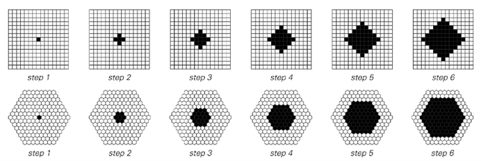
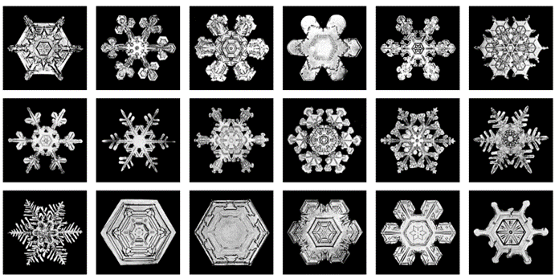
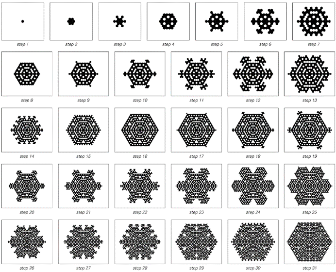
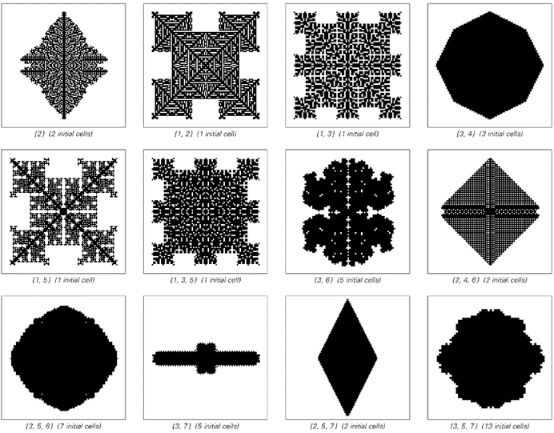

8.2 晶体的生长
在微观层面上，晶体由类似元胞自动机中细胞那样排列规则的原子组成。当液体或气体冷却到其冰点以下时，就会形成晶体。晶体总是从一个晶核开始生长——通常是像一粒灰尘这样的外来物体——然后通过在其表面逐渐添加更多原子来生长。
为了理想化这个过程，我们可以考虑一个元胞自动机，其中黑色细胞代表固体区域，白色细胞代表液体或气体区域。如果我们假设任何与黑色细胞相邻的细胞在下一步都会变成黑色，那么我们就会得到如下所示的生长模式。

规则规定，如果一个细胞的任何邻居已经是黑色，则该细胞应变为黑色的元胞自动机。所产生的图案具有简单的多面体形状，直接反映了底层细胞网格的结构。
(p 369)
每种情况下产生的形状都非常简单，最终只是由平坦的面组成，这些面的排列方式直接反映了底层细胞网格的结构。自然界中的许多晶体——包括大多数宝石——都有类似简单的多面体形状。但也有一些不是。众所周知的一个例子是，雪花可以有非常复杂的形状，如下图所示。
从近似的角度来看，雪花中的所有分子最终都位于一个简单的六边形网格上。但在雪花生长的实际过程中，这个网格的每个可能部分并不会都结满冰。造成这种情况的主要原因是，每当雪花上增加一块冰时，就会释放出一些热量，从而抑制附近进一步增加冰块。
人们可以通过设定规则的元胞自动机来捕捉这一基本效应，即如果细胞只有一个黑色邻居，则变为黑色，但如果细胞有多个黑色邻居，则保持白色。对面页面上的图片显示了这种元胞自动机进化的一系列步骤。尽管其底层规则很简单，但人们看到的是，它产生的图案与真实雪花中看到的图案惊人地相似。
通过观察元胞自动机的行为，人们可以立即对雪花做出各种预测。例如，人们预计，在特定雪花的生长过程中，随着新树枝的生长然后相互碰撞，应该会出现树状和多面体形状之间的交替。

雪花的典型形态示例。请注意，不同图片的比例尺不同。
(p 370)
如果观察真实的雪花，所有迹象都表明这正是发生的事情。事实上，一般来说，下面显示的简单元胞自动机在再现雪花生长的各种明显特征方面似乎非常成功。但不可避免地，它并没有捕捉到许多细节。实际上，对面页面上的一些照片在最终看起来与下面显示的进化过程中的任何步骤产生的图案都不太像。

在元胞自动机的进化过程中，每当一个六边形网格上的细胞在前一步恰好有一个黑色邻居时，它就会变成黑色。这个规则捕捉到了雪花中发生的基本生长抑制效应。在不同步骤中获得的图案与许多真实的雪花惊人地相似。
(p 371)
但事实证明，一旦尝试建立更完整的模型，就会立即出现大量问题，并且很难知道哪些问题真正重要，哪些不重要。在基本层面上，人们知道雪花是由云中的水蒸气凝结成冰形成的，给定雪花的结构由其生长环境的温度和湿度以及在那里停留的时间长短决定。
上面提到的生长抑制是水或水蒸气凝结成冰时释放一定量的潜热的结果——这与冰加热到0°C时仍需要热量才能融化的现象相反。
但还有许多其他效应。例如，冻结温度实际上随表面曲率的变化而变化。在六边形网格的不同方向上，热传导率也不同。雪花周围的水蒸气中会产生对流。随着晶体的生长，会产生机械应力。
在标准科学文献中存在各种雪花生长模型，通常侧重于这些效应中的一个或两个。但在大多数情况下，这些模型在基本层面上都不太成功。因为它们基于传统的数学方程，所以只能处理相当简单的平滑形状——因此从未真正能够解决真实雪花中如此引人注目的复杂结构。
但是，基于简单程序（如元胞自动机）的模型在处理更复杂的形状方面没有问题，而且正如我们所见，实际上很容易重现真实雪花中整体行为的基本特征。
那么其他类型的晶体呢？
自然界中存在各种各样的形态。正如对面页面上的图片所示，即使是非常简单的规则下的元胞自动机也是如此。事实上，就像自然界一样，行为的多样性是惊人的。有时会产生简单的多面体形状。但在其他情况下，会出现针状、树状或树枝状形态，以及圆形和许多方面看似随机的形态。
(p 372)
最后这些形态的出现起初尤其令人惊讶。因为人们可能会认为，像晶体这样的物体最终形状的任何明显随机性，必然是其原始种子或生长环境中的随机性的结果。
但事实上，如下面的图片所示——正如我们在本书中多次所见——仅仅通过应用简单的基本规则，随机性也可能内在地产生。而且，与一直以来的假设相反，我怀疑这实际上正是晶体材料形成的形状中有时会看到的明显随机性的产生方式。

以下是用于模拟晶体生长的二维元胞自动机产生的图案示例。在每个情况下，规则都是：如果方格上指定数量的邻居（包括对角线）在前一步是黑色的，则细胞会变成黑色。这些规则是这样的：一旦细胞变成黑色，对应于固体，它就再也不会变回白色。在每个情况下，都使用了一行指定长度的初始黑色细胞。
(p 373)